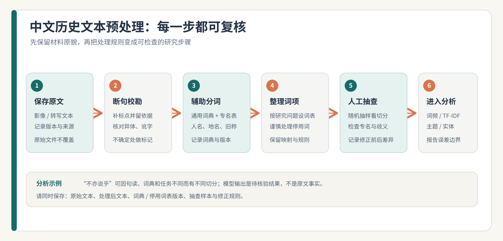

第 4 章 文本挖掘与 NLP
学习目标：完成本章后，你应能
（1）说明中文分词与句读的特殊性；
（2）用分词 + TF-IDF/主题模型从语料中提炼结构；
（3）用命名实体识别抽取人/地/时/事；
（4）理解"历史语言"给 NLP 带来的适配难题，并能指出一处语料偏见。
4.0 思政导入
思政融入（课程思政）：用 NLP 阐释古籍，是“守正创新”的生动实践：以新方法激活传统，但必须以尊重原文与前人注疏为前提，不以模型结论僭越历史。中华典籍是中华民族的智慧结晶，让技术使它“活起来”，正是增强文化自信的一条切实路径——前提是谦卑与严谨。
思政案例（课程思政示范案例 / AI 思政课 知识库）：可参照《文化哲学》“坚持文化自信”与《中医基础理论》“中国传统文化”的育人切入点——以技术活化典籍，须以尊重传统为前提。
4.1 文本是第一大类人文数据

第2章把文本列为五类之首，不是偶然——古籍、报刊、书信、剧本，构成了人文研究的主干材料。NLP 的任务，是把"人读得懂的字"变成"机器算得了的数"：词频、向量、实体、主题。
理论4.2 分词与预处理：中文的特殊性
英文靠空格分词，中文没有。通用工具（如 jieba）按现代语料训练，遇到古籍异体字、避讳字、缺句读就会翻车。预处理常做：
- 分词：
jieba.lcut("关关雎鸠在河之洲")； - 去停用词：去掉"之、乎、者、也"等高频无实义词；
- 句读还原：古书无标点，需先补断句再分析。
提醒：用现代分词器切古诗文，结果要人工抽查——"不亦说乎"被切成什么，决定了后续一切。

4.3 从词频到主题：词云、TF-IDF 与 LDA
- 词频/词云：最快的"扫一眼重点"，但易被长文主导；
- TF-IDF：衡量"在这篇重要、在全集罕见"的词，比纯词频更准；
- LDA 主题模型：把成千上万篇自动归成若干"主题"，每篇是主题的混合。例如对近代报刊跑 LDA，可能析出"实业""教育""宪政"等隐主题。
真实研究案例：历史报纸中的议题发现：Kuebart、Schultze 与 Selgert 在《Article based topic modeling on re-processed historical newspapers》中，对《科隆日报》（Kölnische Zeitung）1803—1945 年的 425,194 页报纸进行图像与文本重处理、版面分段后，比较了多种主题模型实现（包括 Gensim LDA、tomotopy LDA、LeetTopic 和 BERTopic）。研究展示了主题模型如何帮助定位贸易登记、劳工广告和政治新闻等版块，并比较不同工具在大规模报纸语料上的适用性。这个案例说明：主题模型的可解释结果依赖 OCR 与版面切分质量，也要结合原文抽查；模型发现的是候选议题，不是自动成立的历史解释。查看论文（DOI: 10.5617/dhnbpub.13103）。
4.4 命名实体识别：抽人、地、时、事
NER（命名实体识别）从文本里标出人物、地点、时间、机构、事件。对一部地方志跑 NER，能直接得到"某县出现过哪些名人、哪些水患、哪些书院"。这是后续网络分析（第6章）、空间分析（第7章）、知识图谱（第9章）的数据源头。
理论4.5 历史语言的麻烦：Adapting vs Pre-training
通用模型在当代文本上训练，遇到历史词义、旧拼写、专名和文体变化时，可能把旧词误读成现代含义，或无法识别当时的人名、地名。改善模型有两条路线：领域预训练从历史语料训练基础模型，可能更贴合历史语言，但需要大量语料和算力；适配则从现有通用模型继续预训练或微调，门槛较低，但效果取决于历史语料和下游任务。
真实研究案例：历史英语模型 MacBERTh：Manjavacas 与 Fonteyn 在 2022 年研究中，比较了以历史英语语料从头预训练模型与将现代英语模型继续适配到历史文本的路线。他们在词性标注、命名实体识别、词义消歧及历史文本断代等任务上评估模型，报告指出：历史语料从头预训练得到的基础模型整体更强；但其成本更高，继续适配现有模型是更轻量的选择。研究对象是历史英语，不能直接据此断定中文古籍也会有相同结果；中文项目仍需按语料年代、字形、任务建立验证集进行比较。查看论文（DOI: 10.46298/jdmdh.9152）。
- 先定义任务：分词、实体识别、断句或词义判断对模型的要求不同。
- 再盘点资源：评估可用历史文本的数量、年代跨度、OCR 质量和人工标注成本。
- 设置对照：在相同训练 / 验证 / 测试划分上比较通用模型、适配模型和领域模型，避免只挑表现最好的一组数据汇报。
- 人工审错：尤其检查异体字、古今同形异义词、避讳字和低频专名。
4.6 伦理坐标：语料偏见与"客观"幻象（本章核心能力）
- 取样偏见：能数字化的文本偏向"被保存下来的"——名家、官修、纸本，底层声音天然缺失；
- 词表偏见：停用词表、主题数 k 都是人定的，k 取 5 还是 10，叙事就变；
- "客观"幻象：主题模型给的是统计结构，不是"历史真相"，别把机器聚类当定论。
真实研究案例：Google Books 语料的时代偏差：Pechenick、Danforth 与 Dodds（2015）研究 Google Books 词频数据能否代表文化与语言变化。他们指出，该语料更像“每本书收一份”的图书馆目录，而非反映读者人数或社会流行度的调查；20 世纪科学与专业文本在语料中的比重上升，也会带来学术术语与引用表达的增加。作者比较 1800—2000 年多个英语子语料的差异后，提醒研究者先检查语料构成与时间变化，再作广泛的文化趋势推断。对人文研究的启示是：词频曲线可能反映的是馆藏和出版结构，而不一定是社会观念本身。查看论文（DOI: 10.1371/journal.pone.0137041）。
一条红线：不把 NLP 输出直接说成"古人就是这样想的"；呈现结果时同步交代语料与参数。
4.7 综合实践：主题探索与作者文本对比
本节把主题探索与作者比较合并为一次文本分析项目。两项任务可以使用同一批经许可取得的诗文、报刊或档案材料；开始前先记录来源、年代范围、收录标准和分词 / 停用词规则。
任务一：探索语料中的主题
选取 10–50 篇同一总集、报刊专栏或档案专题中的文本，完成分词和必要的停用词处理，再使用 TF-IDF 或 LDA 提炼关键词 / 候选主题。列出每个主题的高权重词，回到原文抽查例句，并判断这些词是否能形成有证据支持的解释。LDA 主题数及停用词设置应写入记录，并可比较不同设置下结果是否稳定。
任务二：比较两位作者的文本特征
- 材料：选择两位诗人或作者各不少于 10 篇文本，尽量控制体裁、时期和文本长度差异；
- 步骤：统一分词和停用词规则，用 sklearn
TfidfVectorizer提取各作者的高权重词，绘制关键词条形图或词云，再回到原文核对关键词语境； - 产出：主题 / 关键词表、对照图、抽查记录，以及一段约 150 字的解释，说明差异能支持什么、不能证明什么；
- 评价量规：分词与语料说明（25%）、分析设置和结果正确（30%）、原文核查（25%）、解释克制（20%）。
方法参照：可阅读《数字人文视域下先秦典籍植物知识挖掘与组织研究》及《基于 ChatGPT 和零样本提示的临床量表文本中结构化项目信息抽取研究》，比较古籍文本挖掘与提示式信息抽取各自回答的问题；两篇研究方法并不相同，不应将其结果当成同一任务的直接优劣比较。
4.8 本章小结与思考
带走三件事：中文预处理（分词/停用词/句读）、从词到主题（TF-IDF/LDA）、NER 抽实体（人地时事）。记住 4.5 与 4.6：历史语言要适配，模型结论要带"语料与参数"的尾巴。
思考题
- 用
jieba切一句你专业的古文，结果哪里不对？这透露了现代分词器的什么盲区？ - LDA 的"主题数 k"由人设定。k 取不同值，叙事会怎样变化？这算"主观"吗？
- 如果一篇 NLP 论文声称"用主题模型发现了某思潮的兴起"，你会要求它补充哪些信息才敢引用？
4.9 学术前沿与延伸阅读
下表为通过 OpenAlex（开放学术图谱，聚合期刊/会议/预印本）、DBLP（CS 会议期刊，含 SIGIR/UIST/DH/IJDAR/EPIA）、arXiv（预印本）、CrossRef（期刊 DOI 元数据）、CORE（开放获取库）检索到的真实文献，按来源/被引排序，供延伸阅读与实验报告引用。
| 来源 | 年份 | 标题（链接） | 作者 / 场所 |
|---|---|---|---|
| CrossRef | 2022 | Adapting vs. Pre-training Language Models for Historical Languages | Journal of Data Mining & Digital Humanities（被引 27） |
| CrossRef | 2016 | Alien Reading: | Debates in the Digital Humanities 2016（被引 4） |
| CrossRef | 2024 | NLP for Digital Humanities: Processing Chronological Text Corpora | Proceedings of the 4th International Conference on Natural Language Processing for Digital Humanities（被引 3） |
| CrossRef | 2024 | Review for "Fine-tuning Large Language Models for Chemical Text Mining" | |
| CrossRef | 2026 | Context-Enriched NLP Pipelines using Large Language Models for High Accuracy Text Mining and Sentiment Analysis | 2026 International Conference on Computer Networks and Inventive Communication Technologies (ICCNCT) |
| CrossRef | 2026 | Temporal Text Classification with Large Language Models | Proceedings of the 6th International Conference on Natural Language Processing for the Digital Humanities |
| CrossRef | 2024 | Decision letter for "Fine-tuning Large Language Models for Chemical Text Mining" | |
| CORE | Natural language processing | Chowdhury, Gobinda G., Chowdhury, G., Chowdhury, GG, Gobinda G. Chowdhury |
课堂复现（检索即方法）：下列代码直接调用 OpenAlex 免费 API 复现本章文献检索（无需密钥）。
import urllib.request, urllib.parse, json
q = 'data science digital humanities'
url = 'https://api.openalex.org/works?search=' + urllib.parse.quote(q) + '&per_page=10&sort=cited_by_count:desc'
oa = json.loads(urllib.request.urlopen(url, timeout=30).read())
for w in oa['results']:
print(w['publication_year'], w['title'], '->', (w.get('primary_location') or {}).get('source', {}).get('display_name'))误用警示：① arXiv 预印本未经同行评审，引用须标 preprint 并追正式版；② 被引数代表影响力非结论正确；③ 商业库（WoS/Scopus/Elsevier/JSTOR/CNKI）本环境无订阅，需机构账号获取后再并入。
与实验衔接：将任一方法对照本章实验改写数据集或提示词，即可形成有学术依据的结题报告。
第4章·中文核心期刊文献实证（V2.2·19 种图情档核心期刊）
下表论文来自 19 种中文图情档核心期刊（中国图书馆学报、情报学报、情报资料工作、档案学通讯、大学图书馆学报、图书情报工作、数据分析与知识发现、情报杂志、情报理论与实践、图书与情报、档案学研究、图书馆杂志、图书情报知识、图书馆论坛、图书馆学研究、图书馆建设、情报科学、现代情报、信息资源管理学报），经 Web 检索（期刊官网 / CNKI 索引 / DOI 溯源）按主题核实得到真实文献（含 DOI/链接）。
| 来源期刊 | 年份 | 标题（链接） | 作者 |
|---|---|---|---|
| 图书情报工作 | 2023 | 数字人文视域下先秦典籍植物知识挖掘与组织研究 | 吴梦成, 林立涛, 齐月, 黄水清, 王东波, 刘浏 |
| 图书情报工作 | 2024 | 基于ChatGPT和零样本提示的临床量表文本中结构化项目信息抽取研究 | 郝洁, 莫治强, 孙海霞, 陈振丽, 李姣 |
| 情报学报 | 2023 | 基于可解释图神经网络模型的社交媒体谣言识别研究 | 汪子航, 言鹏韦, 蒋卓人 |
| 情报学报 | 2024 | 基于知识增强的文本语义匹配模型研究 | 张贞港, 余传明 |
课堂复现（中文文献检索）：这些期刊正式全文多见于 CNKI/万方/维普（本环境无订阅）。可在机构网络以「期刊名 + 主题词」检索，导出 BibTeX/RIS 后交我并入；DOI 可在 https://doi.org/<DOI> 溯源摘要。
误用警示：① 引用以期刊正式版本为准（年/卷/期/页）；② 回到原文核对方法与数据；③ 与本节实验的映射是"启发"而非"背书"。
与实验衔接：将上表任一中文方法（如中文知识图谱、机器学习人文应用）对照本章实验改写，即可形成有本土学术依据的结题报告。
本章配套游戏：分词实体宾果